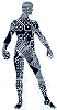
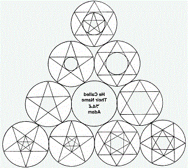
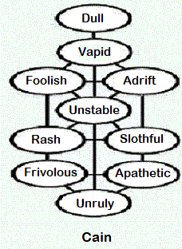
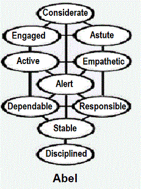

Missteps: Falling within Gerizim While Grounded upon Ebal |
 |
Beginnings of spiritual manifestations are often obscure, whether they be hidden in thought, emotion, or in desire: until the fruits begin to appear in the world of action-- until the blessings come, or until such beasts of the field as pride, disregard, and arrogance begin to multiply as consequence of driving beyond the Spirit's leading. By then, however, the exact point at which a trend began is usually forgotten, if at first noticed. As with natural conception, so it is with conception of things spiritual. In the pursuit of righteousness, a fall towards iniquity comes in a mystery, upon seduction by the most subtle of beasts; and there is no beast dwelling in God's holy mountain more subtle than man, himself.
By legitimate use of the faculties of the flesh, we were gazing by the Spirit upon the Tree of Life: we were feeding our minds upon the fruit among its branches as revealed in the beatitudes of Sepher MattíthYahu (those words are Spirit, and they are Life). Our focus was on haMashiyach as express image of the invisible presence of Elohim. That focus was a spiritual reality, but it was supported in the flesh by the faculties of
the body: because the invisible things of God are revealed in the forms, sensations, and experiences of the flesh-- in and by the intricacies and interdependencies of all things made in the natural parable of creation.
However, as the upward momentum of our spirits slowed within that focus, the weight of fleshly faculties began asserting itself to pull us downward again-- much as demonstrated by the creation parable of natural gravity. Approaching the intellectual zenith of a spiritual ascent upon Mount Gerizim, we began to examine spiritual vision not purely in terms of itself, but also for its relevance to our conditions in the flesh.
In the very honorable process of applying the words of Spirit and Life to their meanings for the flesh, therefore, we also began to define those words in terms of the needs and desires of the flesh, thereby limiting infinite Wisdom according to the finite capacities and expectations of our earthly wisdom. Our thoughts shifted from the projected Light, itself, to its reception and reflection in the dark medium of natural intellect.
Perhaps this perception can be stated more clearly by being restated: as it is written, "In the mouth of two or three witnesses shall every word be established." As our spirits focused intently upon the Tree of Life, the exterior, earth-centered context in which we were standing-- the serpentine spirit that speaks of the natural concerns of incarnation-- also traveled upwards with our spiritual intelligence, to meet and join with our thoughts concerning the righteousness of Elohim.
As the serpent of human intellect-- that carnal mind of which the apostle Paul wrote-- coiled itself among our spiritual meditations upon Elohim, the mind's focus shifted from the Tree of Life to the tree of the knowledge of good and evil; and, so, we began to fall: a misstep during ascent made our feet stumble onto Ebal, the lesser mountain. Although both the Tree of Life and the Tree of Knowledge are both situated in the midst of the garden, Eve speaks of them as though they are a single tree. And so they are: the difference between them is in the orientation of our minds.
When our understandings of the Living Reality of Elohim are clouded by perspectives of temporality, we partake of the tree of the knowledge of good and evil. This idolatry of one's own receptivity was the error not only of Eve, but also of the first inhabitants of the land of Canaan; and it can become a snare unto the children of Y'Shar-la, also. For as we eat of the lesser tree, our faculties become vulnerable to strange Elohim-- to idols formed by our misunderstandings and self-deceptions concerning the Life Tree. The lesser tree bears pleasant fruit, but it fills us with idolatrous approximations upon the righteousness of la and with assumptions about how metabolism of the fruit of dualism should manifest in our lives.
Walking in the leaven of those well-intentioned deceptions, we cannot but hear the words of Spirit and Life otherwise than they were intended; and, thinking we nevertheless understand, we prepare to act somewhat contrarily to their intent. Perfect truth is turned aside from our perceptions-- is parried, as it were, by the whirling sword of the fallen angel of the carnal mind (may the Cherubim and flaming Sword of Genesis Three overlook the inadequacies of this not-unfamiliar interpretation, which is fruit of the lesser tree). Thus deluded, we step forward, only to find ourselves going backwards.
In sorrow, as therefore demonstrated, we realize that the sour grapes upon the tree of the knowledge of good and evil are wholly the product of our own imaginations, and that the goodly Vine that graces its branches produces only goodly fruit: bitter flavor comes from the residue left by our fingers as we lift the fruit unlawfully to our lips. This heritage of the lesser tree is the golden calf, which the mind-- apart from the guidance of anointing by the Spirit, by endurance in the Breath-- fabricates graven images from those trinkets of heavenly Wisdom we retain, by recasting them in the fires of earthly wisdom.
The true life that glows within the shell of the physical body knows the taste of the Bread of Life. It also discerns that there is nourishment in the bread of affliction. Therefore, Adam, as son of Elohim, is not deceived by what dainties the serpent has to offer; for he knows that the nutrients they offer are expeditiously provided without toxins in the Bread of Heaven, and that any benefit the lesser tree might offer is properly absorbed from lawful bread, by reason of the spiritual analogy to the chewing of the cud-- during in the process of sated reflection.
Eve, Adam's good gift from HaShem, is deceived by the lesser wisdom, however; and she actively partakes of it in its raw form, becoming addicted, thereby, to "things below." Therefore Adam, in a figure of Messiah to come, must hearken unto Eve, in order that he might minister to her throughout her captivity in deception. Adam's spiritual strength will be made perfect, in the fullness of time, by the very weaknesses of flesh that led to the loss of his first estate: the bride of Adam shall come to be, in the glory of her redemption, the bride of haMashiyach.
Had Adam abandoned Eve to face her fate alone, he would have denied the righteousness of his Creator and, simultaneously, would have deprived all future sons of man the hope of redemption. He understood, however, that the far-distant time of restoration would not come for fathers or sons, mothers or daughters, except there should first come a great falling away.
|  |
Selah The Garden vision fades, and we begin our sojourns among more common lands. Concerns about the enslavement of the higher faculties by the body's demands are multiplied; and, soon, we discover our sons, Cain and Abel. |
 |
Abel is as a fleeting memory of the beatific vision, now grown dim; and Cain, the elder, is as our growing involvement with the grasping cares of this life, below, because of which Abel is slain. "Abel," signifying something transitory, can be rendered into English as "wind" (we hear the sound thereof, but cannot tell from whence it cometh, and whither it goeth). "Cain," construed in a similar sense, can be rendered as "anchored," or as "fixed." Cain's desire is to capture the Garden vision, that he may handle it as a possession-- that he might master it. Could he possess his own soul in patience, the desire of his heart would be clean in the sight of hwhy and would be satisfied: in the day HaShem has predetermined to enlarge Cain's heart sufficiently to receive the fullness of the vision.
However, Cain is unable to flex his will to wait prayerfully upon hwhy for times of transformation. A tiller of the ground, he proudly earns his bread by the sweat of his brow; and in pursuit of enlightenment, he is not long able to rise above an earth-bound focus.
Not so, his brother Abel, whose labors engage his attention upon the flocks that freely roam the fields of Earth and forage in the open firmament of the second heaven! Jealous of Abel's capacity for Vision, Cain's passions build and tower against the bird-like thoughts of his shepherd brother, which soar beyond his own reach like fleece upon clouds; and he plants his spear in the furrows of ground he has chosen, waiting only for the moment he might prevail.
In the absence of Abel, the sons of Cain proliferate in the land of Nod-- in the realm of perpetual backsliding. There, they become enthroned as mighty men, men of renown-- men able to enslave others by the thrust of their fixed, rigid, earthly understandings of the beatific vision. Wiser in their generations than the children of heavenly Light by reason of carnal logic supported by presumed fact, they enforce the heavy burden of their father, Cain, upon those whose thoughts would rise, again, towards Heaven to encounter the vision firsthand.
As the concerted onslaughts of Nimrod's tyranny become unbearable in the fullness of iniquity, however, they also become vulnerable to revelation. In an acceptable time, therefore, our faithful Shepherd must arise to shake, terribly, the heavens and the Earth: that those things that cannot be shaken may remain.
It is written, "El speaks once; yea twice, yet man perceives it not." To read scripture only in the context of the duality of the righteous and the wicked is to apply the mind only to exterior facets of the mystery, missing the point of the whole. To do so is to condemn Cain and to supplant Abel, as irretrievably lost, making of Seth the child of Eve's expectations. Is this the way of an El? Is not this the way of a man, and of the basest of men?
The short work of hwhy upon Earth is a strange work, and those who have glimpsed of its righteousness must struggle with stammering lips for its expression. Adam Kadmon, like the two-edged sword of scripture, speaks simultaneously to the earthly man and to the spiritual pilgrim. Mature sons of Light-- brethren of the Complete Adam, of the Perfected Adam-- hear yet another sound from the Sword that turns every which way to preserve the way to the Tree of Life: the message of the center path-- the thrum of the bright steel that spans the blade and draws its edges together, into a point.
It is written that there is none righteous upon Earth. Who, then, might the wholly wicked be? Is not the Earth weighed in a balance? Are the scales unequal? We were to feed off of three measures of meal, not two. Many are woefully evil, beyond doubt! But which of the monsters of the human family can be said to have achieved a state utterly lacking mitigating qualities? Even the Austrian Angel of Death must have been occasionally guilty of fits of mercy and susceptible to lapses into tenderness-- aberrations appearing in unguarded moments of his feverish time on Earth as from short circuits in the schematics of his brain. It is far from Elohim to destroy the righteous within a city along with the wicked, though but a very few remain.
When I first studied the parable of those who, being evil, were nevertheless able to give good gifts to their children, I imagined that there were groups of "good" parents sitting comfortably around the Master and nodding their heads, contentedly, in affirmation of his rebuke, while other "bad" groups sat there hanging their heads in shame. My eye wasn't single. It was focused partly on the Master's teaching and partly on its application to my own values within personal realms of instability. What is said unto one, is said unto all; for there is but One who is good: hwhy.
Subsequent to the fall, human beings are-- every one of us, bad and better, alike-- evil. Because of sin, we all labor under a dual focus. We are able to see in terms of both "things above" and "things below," but we are deficient in the ability to reconcile our perceptions. Evil is not the opposite of good; wickedness is. Like the creation parable of the firmament, which is a nether interval suspended between two extremes, evil is neither hot nor cold, but answers to potent influences acting upon it, as from without.
{kind=link}
If the firmament had been created otherwise, moreover, the perfect Light of
hwhy had not been able to penetrate the perfect darkness of Earth to raise unto the Father perfected children. In the days of creation, we recall, the Creator proclaimed all things to be good and
very good. Although we are justly mortified by our errors, HaShem winked at our ignorance, having both foreseen all consequences
of his strange work, and having already provided for the restoration of all things.
As the creation parable continues each day, however, we understand that those things that do not actively
reflect the light they receive are without substance, empty vessels without
the means to reflect the Light of Life within them. To languish carelessly in acceptance of a fading twilight is the error of the Laodiceans, who comforted themselves in the status quo and made no active effort to align themselves with the Light of Life.
The sons of Light purposefully clothe themselves with the garments akin to those of the lilies of the meadows by maintaining single-minded focus on the Light falling upon the fields of their planting. They live only to overcome their fetal confinement in Earth through formation of a seed child that can be carried to lands with new heavens and a new Earth, the Promised Lands that eye has not seen, nor ear heard.
Woe to those who call evil good, and good evil! Numbering Y'Sharla before the command to number has come, they separate the world into camps of the saved and the lost, saints and sinners, the righteous and the wicked, Jew and Gentile. Why? Because they mistake conviction for faith. While we sit as eternal judges when we have yet to master the temporal, we are prone to condemn the innocent and to free the guilty. Until we have mastered the measurement of Messiah, we cannot even accurately judge ourselves, let alone brethren we know only in part.
"If we," the body of Mashiyach, "say that we have no sin, we deceive ourselves" (bearing false witness in the process, and to offend in one point is to offend in all) "and the truth is not in us"! Only he that now allows will allow, until he be taken out of the way: the man of sin. When he is gone, we will hear the testimony of Paul without the leaven of our imaginations: "For as in Adam all die, even so in Christ shall all be made alive."
By the same words of the Word, hwhy sends both the early and the latter rain upon both the wheat and the tares, commanding that we trouble not the ground-- to the end that every kernel of wheat might be preserved unto harvest. Failing brethren and our own selves, we have put darkness for light and light for darkness because of approximate understanding of the righteousness of la.
Understanding, now, somewhat of the breadth and length and depth and the height of Messiah's love for the whole family in Heaven and on Earth, let us therefore approach the two-leaved gates of heaven and of hell, knowing with certainty only that the gates of Gahanna shall not prevail against us, and that-- as they are sprung wide before us in the valley of decision that lies between Mounts Gerizim and Ebal-- we shall be found standing without spot or blemish before the heavenly throne at the last day: as many of us as shall have called, in the depths of the shadowy valleys of death, upon the unvoiced name of hwhy in the voiced name of owcwhy Yahushua and in the position of ocwhy Y'shua, our elder brother and True and Faithful witness, who is as Lord hwhy: as Yahushúa, the Angel of the Presence of hy.